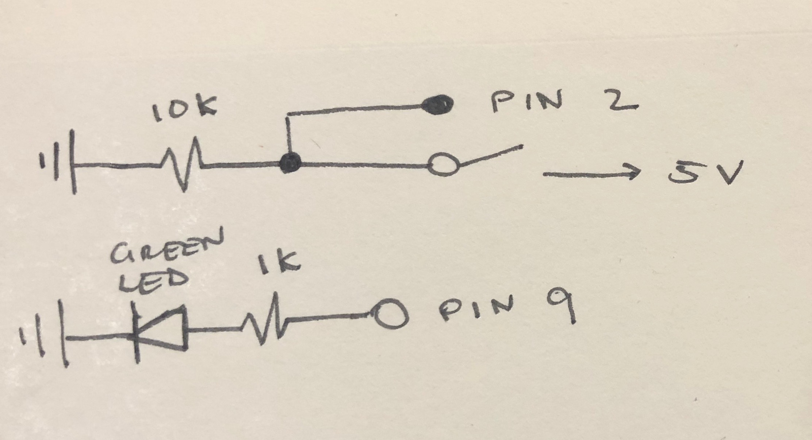

Assignment 2: Fade!

This circuit fades an LED on and off with the press of a button.
Button and LED schematic

For green LEDs:
1.8V drop, 5V power source, 20 mA
V = 5-1.8 = 3.2 V
V = I x R = 3.2 = 0.02 x R
R = 3.2/0.02 = 160 Ω
I chose to use a 1K Ω resistor to limit the current flowing to the LED, much more than the 160 Ω requirement.
For the button:
5V = 200mA x R
5V / 0.2 A = R
R = 25 Ω
I chose to use a 10K Ω resistor, as we did in class examples, even though any resistor larger than 25 Ω would have sufficed.